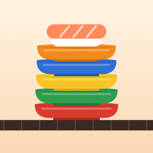

Keep a running total at conveyor-belt sushi restaurants: tap each colored bowl as you eat, then see the check with tax, tip and a split.
Open a ticket on the support page on GitHub. Tell us your device, iOS version and what happened, and we'll get back to you.
My restaurant's prices are different. Tap the gear icon, choose your restaurant (or Add Restaurant), then tap any bowl to change its color, name or price. You can add or remove bowls too.
How do I add several bowls at once? Type the number in the Qty box next to the bowl and tap Add.
Where do I set tax and tip? Sales tax and your usual tip are in Settings. You can change the tip and split the bill on the Check screen.
How do I save a meal? Tap Check, then “Finish Meal & Save to History”. Past meals are under the clock icon.
The app collects no data. Read the full privacy policy.